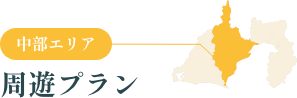

静岡中部エリアの楽しみ方
徳川家康によって建立された駿府城がある市ということで、
城下町ならではの華やかさと洗練された都会の雰囲気と秘境奥大井や南アルプス、
広大なお茶畑が広がる牧之原台地まで広がる自然を感じることができるエリアです。
旧東海道の宿場町の風情を残すエリアや、徳川家ゆかりのスポットをはじめ、
旧東海道の宿場町など近世の歴史、文化をお楽しみいただけます。
また、駿河湾沿岸の清水港や焼津港で水揚げされる豊富な魚介類を使った漁港グルメも多彩です。

富士山を眺めながら
マインドフルネスな陶芸体験「〇〇〇〇」
マインドフルネスな陶芸体験「〇〇〇〇」
壮大な富士山が見れる絶好のロケーションの中で、大地の癒しとも言える陶芸体験でこころをリフレッシュ。
担当者からの推薦コメント
＊＊＊＊＊＊＊＊＊＊＊＊＊＊＊＊＊＊＊＊＊＊＊＊＊＊＊＊＊＊＊＊＊＊＊＊＊＊＊＊＊＊＊＊＊＊＊＊＊＊＊＊＊＊＊＊＊＊
「〇〇〇〇」周辺の絶品グルメ
圧倒的ボリューム
海鮮丼
店舗名
やみつきになる味
やきそば
店舗名
至福のプリン
甘味処
店舗名
プレゼント
キャンペーン
キャンペーン
静岡銀行厳選、オリジナル体験ギフトを
抽選で〇〇〇名様にプレゼント！
抽選で〇〇〇名様にプレゼント！